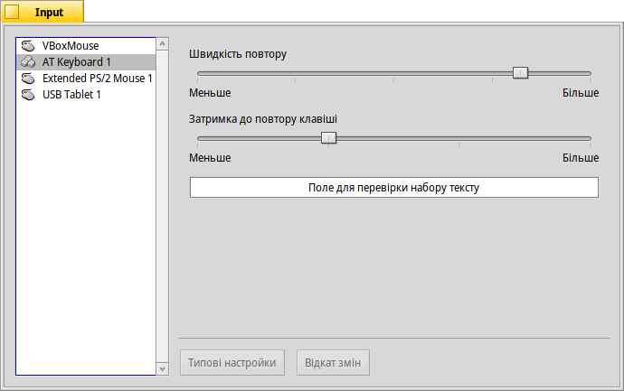
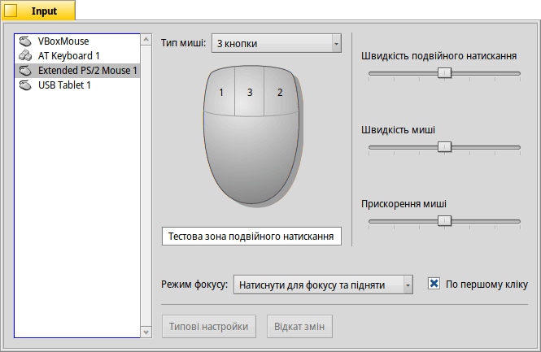
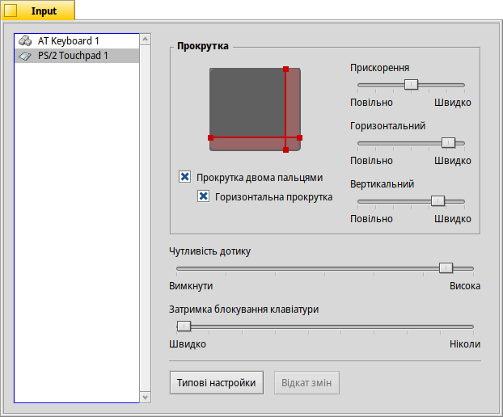

| Індекс |
|
Клавіатура Миша Тачпад |
 Input (Пристрої вводу)
Input (Пристрої вводу)
| Deskbar: | ||
| Розташування: | /boot/system/preferences/Input | |
| Налаштування: | ~/config/settings/Keyboard_settings ~/config/settings/Mouse_settings ~/config/settings/Touchpad_settings |
Налаштування пристроїв вводу об'єднує раніше окремі панелі з параметрами для клавіатури, миші і тачпада (сенсорної панелі), а також будь-якого іншого пристрою вводу, розпізнаного системою. Пристрої перелічено ліворуч, а панель праворуч змінюється відповідно до того, які настройки доступні для вибраного пристрою.
 Клавіатура
Клавіатура

Панель налаштувань клавіатури дає можливість встановити частоту повтору натиснутої клавіші та затримку до початку дії повтору. Ви можете перевірити результат зміни цих параметрів в спеціально відведеному для цього текстовому полі.
| повертає все до стандартних (типових) значень. | ||
| відміняє зміни, які були внесені користувачем. |
Миша

Спочатку Ви встановлюєте тип миші: миша з 1, 2 або 3 кнопками. Ви можете імітувати 2-гу (=праву) кнопку миші, утримуючи клавішу CTRL під час натискання на ліву кнопку миші. Для 3-ї (=середньої) кнопки миші це комбінація клавіш CTRL ALT + натискання на ліву кнопку миші.
Ви можете змінити порядок нумерації кнопок миші. Для уього потрібно натиснути на кнопку і вибрати нове значення у спливаючому меню.
За допомогою повзунків праворуч Ви регулюєте швидкість подвійного натискання, швидкість та прискорення миші. Тестова область під графічним зображенням миші використовується для перевірки відповідності швидкості подвійного натискання Вашим уподобанням: якщо подвійне натискання на слові не виділяє його, це означає, що швидкість завелика (або Вам доведеться звикнути натискати швидше…).
Для управління фокусом існує три , які визначають, як вікна реагують на натискання:
| Цей режим встановлений за замовчуванням: ви натискаєте на вікні, воно отримує фокус і піднімається (виступає) на передній план робочого столу. | ||
| Натискання кнопки миші на вікні лише передає йому фокус, при цьому вікно автоматично не піднімається на передній план робочого столу. Щоб підняти вікно, Вам потрібно натиснути на заголовок чи рамку вікна, або зробити клік будь-де, утримуючи клавіші управління вікном CTRL ALT. | ||
| Вікно під курсором миші автоматично отримує фокус. Щоб підняти вікно, виконайте дії описані в режимі . |
Активація опції позбавляє Вас необхідності спочатку передавати фокус неактивному вікну, щоб мати можливість використовувати елементи інтерфейсу, такі як кнопка або меню. Це пов'язано з ризиком ненавмисного закриття вікна, наприклад, випадковим натисканням кнопки закриття, коли Ви націлилися на заголовок вікна. З іншого боку, це значно прискорює робочий процес.
Усі зміни в настройках застосовуються негайно.
| повертає все до стандартних (типових) значень. | ||
| відміняє зміни, які були внесені користувачем. |
Тачпад

Перетягуючи червону вертикальну або горизонтальну лінію на зображенні сенсорної панелі, Ви встановлюєте зону прокрутки (злегка червонувата на фоні сірої загальної сенсорної області). Переміщення пальця по цій частині панелі призведе до відповідного переміщення смуг прокрутки вікна.
Праворуч розташовані повзунки для настройки загального прискорення прокрутки та швидкості вертикальної і горизонтальної прокрутки.
Повзунок прискорення визначає, наскільки швидше прокручуватиметься список, якщо Ви дуже швидко проведете пальцем по зоні прокрутки. Повзунки вертикальної/горизонтальної швидкості контролюють загальну швидкість при використанні області прокрутки у «звичайний» спосіб.
Під графічним зображенням тачпада є чекбокси які вмикають режим для вертикальної та горизонтальної прокрутки. Перемістіть два пальці паралельно по вертикалі або горизонталі, щоб перемістити смуги прокрутки у вікні.
Якщо Вам зручно користуватися цією функцією, Ви можете не встановлювати зони прокрутки та замість цього використовувати всю панель для звичайної навігації.
У нижній частині панелі знаходиться ще один повзунок, який регулює параметр . Якщо Ваші дотики продовжують ігноруватися, збільште чутливість. Якщо система постійно реєструє натискання, а Вам потрібно лише перемістити курсор миші, спробуйте зменшити чутливість.
Нарешті, Ви можете встановити параметр . Якщо під час введення тексту Ви випадково переміщуєте курсор сенсорної панелі, спробуйте зменшити затримку блокування.
| повертає все до стандартних (типових) значень. | ||
| відміняє зміни, які були внесені користувачем. |
Ось порада, яка не пов'язана з параметрами сенсорної панелі, але підходить до загальної теми:
Чи знаєте Ви, що перетягування можна робити просто за допомогою тачпада, тобто без використання кнопок? Просто зробіть подвійний дотик, не відпускаючи палець після другого дотику. Підхоплена піктограма прилипне до курсору миші, і Ви зможете перетягувати її, рухаючи пальцем. Якщо Ви відпустите палець, піктограма відпаде.
Як продовжувати перетягувати піктограму, коли під час перетягування Ваш палець досяг межі сенсорної панелі а курсор миші ще не досяг краю екрана? Щойно Ви приберете палець, піктограму буде скинуто.
Залежно від апаратного забезпечення, є чудова функція: просто не піднімайте палець на краю сенсорної панелі. Курсор миші продовжить рухатися на автопілоті.